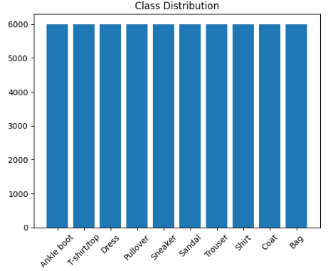

Deep Learning Project: Classification
- Đoàn Tấn Sang - 2252711
- Lưu Chí Cường - 2252097
- Ngô Nhật Tuấn - 2213774
- Võ Hoàng Phúc - 2252650
01. About the Dataset
Fashion-MNIST
🔗 View DatasetCreated by Zalando to provide more realistic, challenging image data while maintaining the same convenient format as original MNIST.
02. Exploratory Data Analysis (EDA)
Data Insights


- Categories: T-shirt, trouser, pullover, dress, coat, sandal, sneaker, bag, shirt, and ankle boot.
Setup & Preprocessing Pipeline
- Resize: Scale images from 28x28 to 224x224 to increase input resolution for CNN.
- Channel Conversion: Convert grayscale to 3 channels to match standard model input format.
- Normalization: Normalize pixel values to improve model training stability.
03. Model Building Pipeline
CNN: DenseNet

Extracts features hierarchically with dense connections.
Vision Transformer (ViT)

Splits image into patches + position embeddings, feeding into a Transformer Encoder with self-attention.
🔄 Data Pipeline & Tensor Shapes
- 1. Raw Input:
(B, 1, 28, 28)- Grayscale image batch. - 2. Preprocessed:
(B, 3, 224, 224)- Resized and 3-channel expanded. - 3. Backbone Output:
(B, Features)- Feature extraction vector (e.g., DenseNet121 yields1024, ViT-Base yields768).
🧠 Classification Head
(B, Features) down to the final class logits (B, 10). The model is optimized using Cross-Entropy Loss.
04. Evaluation & Results (DenseNet)
Classification Report
| Class | Precision | Recall | F1-Score | Support |
|---|---|---|---|---|
| 0 - T-shirt/top | 0.86 | 0.92 | 0.88 | 1000 |
| 1 - Trouser | 0.99 | 0.99 | 0.99 | 1000 |
| 2 - Pullover | 0.89 | 0.94 | 0.91 | 1000 |
| 3 - Dress | 0.91 | 0.96 | 0.94 | 1000 |
| 4 - Coat | 0.95 | 0.89 | 0.92 | 1000 |
| 5 - Sandal | 0.99 | 0.99 | 0.99 | 1000 |
| 6 - Shirt | 0.87 | 0.76 | 0.81 | 1000 |
| 7 - Sneaker | 0.97 | 0.98 | 0.97 | 1000 |
| 8 - Bag | 0.99 | 0.99 | 0.99 | 1000 |
| 9 - Ankle boot | 0.98 | 0.97 | 0.97 | 1000 |
| Macro Avg | 0.94 | 0.94 | 0.94 | 10000 |
| Weighted Avg | 0.94 | 0.94 | 0.94 | 10000 |
01. About the Dataset
VNTC (Vietnamese News)
🔗 View DatasetCollected from multiple major online newspapers (VnExpress, Tuổi Trẻ, Thanh Niên, Người Lao Động).
02. Exploratory Data Analysis (EDA)
Data Insights

- Categories: 10 Classes including Politics, Lifestyle, Science, Business, Law, Health, World, Sports, Culture, IT.

" Tàu du lịch cao tốc Cần Thơ - Phnom Penh Công ty Vận tải thủy Cần Thơ vừa đưa vào hoạt động tàu khách du lịch cao tốc hiện đại (ảnh) phục vụ hành khách tuyến Cần Thơ - Phnom Penh (Campuchia). Tàu có kết cấu vỏ thép và có hệ thống máy lạnh, trang trí nội thất sang trọng. Tốc độ lên đến 25 hải lý/giờ, kinh phí đầu tư trên 10 tỉ đồng. Theo kế hoạch, tàu sẽ khởi hành từ bến tàu khách Cần Thơ - TP Long Xuyên (An Giang) - cửa khẩu Vĩnh Xương - cửa khẩu Kaomsamnor - vào sông Mekong - cảng Phnom Penh. Thời gian hành trình của tàu là bảy giờ, với hai ngày/chuyến. Giá vé 45 USD (lượt đi), 35 USD (lượt về). "
Setup & Preprocessing Pipeline
- Raw Text Handling: Clean and prepare real-world Vietnamese text.
- Word Segmentation: Utilize tools like
VnCoreNLPorundertheseato correctly group Vietnamese compound words (e.g., "học_sinh"). - Subword Tokenization: Apply Byte Pair Encoding (BPE) to tokenize text into subwords, optimizing specifically for the PhoBERT architecture.
03. Model Building Pipeline
RNN: LSTM (Long Short-Term Memory)

Designed to capture sequential dependencies in text by maintaining a memory cell.
Transformer: PhoBERT
Pretrained language model specifically designed for Vietnamese, based on the RoBERTa architecture. Uses a self-attention mechanism.
🔄 Data Pipeline & Tensor Shapes
- 1. Raw Input:
Array of text strings- Vietnamese news articles. - 2. Tokenization:
(B, Max_Seq_Length)- Padded integer token IDs. - 3. Backbone Output:
↳ LSTM: Final hidden state(B, Hidden_Dim).
↳ PhoBERT: Pooled[CLS]token representation(B, 768).
🧠 Classification Head
(B, 10).
04. Evaluation & Results (PhoBERT)
Classification Report
| Class (VNTC Topics) | Precision | Recall | F1-Score | Support |
|---|---|---|---|---|
| XH - Chính trị Xã hội | 0.89 | 0.91 | 0.90 | 7567 |
| DS - Đời sống | 0.86 | 0.84 | 0.85 | 2036 |
| KH - Khoa học | 0.94 | 0.92 | 0.93 | 2096 |
| TT - Thể thao | 0.98 | 0.99 | 0.98 | 6667 |
| Macro Avg | 0.92 | 0.92 | 0.92 | 50373 |
01. About the Dataset
🧩 MSCOCO (Microsoft Common Objects in Context)
🔗 View DatasetMSCOCO is a large-scale object detection, segmentation, and captioning dataset. It provides highly authentic Image-Text pairs describing complex everyday scenes, ensuring multimodal integrity.
02. Exploratory Data Analysis (EDA)
Data Insights


Setup & Preprocessing Pipeline
- Text Prompt Generation: Convert dataset classes into specific caption structures (e.g.,
"a photo of a {object}") for zero-shot classification capability. - Prototype Extraction (Few-shot): Extract vector prototypes for each class (5 vectors for 5 classes) from the image embedding space to use as similarity anchors.
03. Model Building Pipeline

CLIP uses dual encoders (Vision Transformer for Images and Transformer for Text) mapped to a shared embedding space.
🔄 Data Pipeline & Tensor Shapes
- 1. Image Pipeline:
(B, 3, 224, 224)➔ Image Encoder ➔(B, 512)(L2 Normalized). - 2. Text Pipeline: Prompts
(Num_Classes, 77)➔ Text Encoder ➔(Num_Classes, 512)(L2 Normalized).
🧠 Classification Head (Similarity Matching)
- Zero-shot: Computes the dot product between Image Features
(B, 512)and Text Features of prompts(5, 512), yielding probability logits:(B, 5). - Few-shot: Instead of text prompts, it computes similarity between the input Image Feature
(B, 512)and the pre-extracted Class Prototypes(5, 512)from few training images.